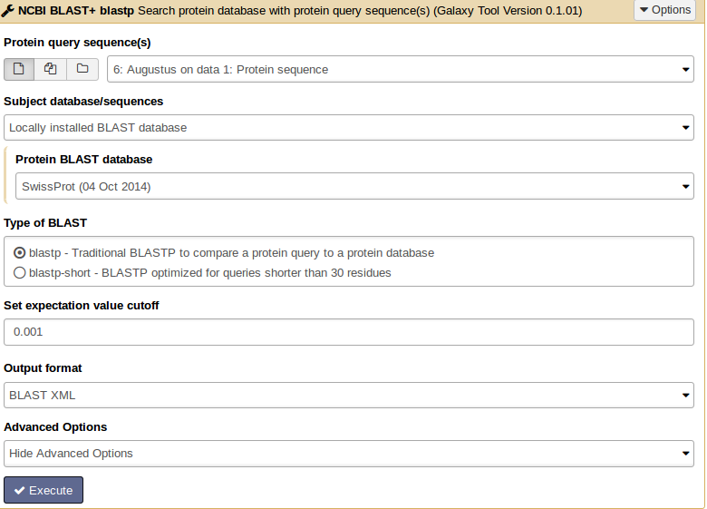
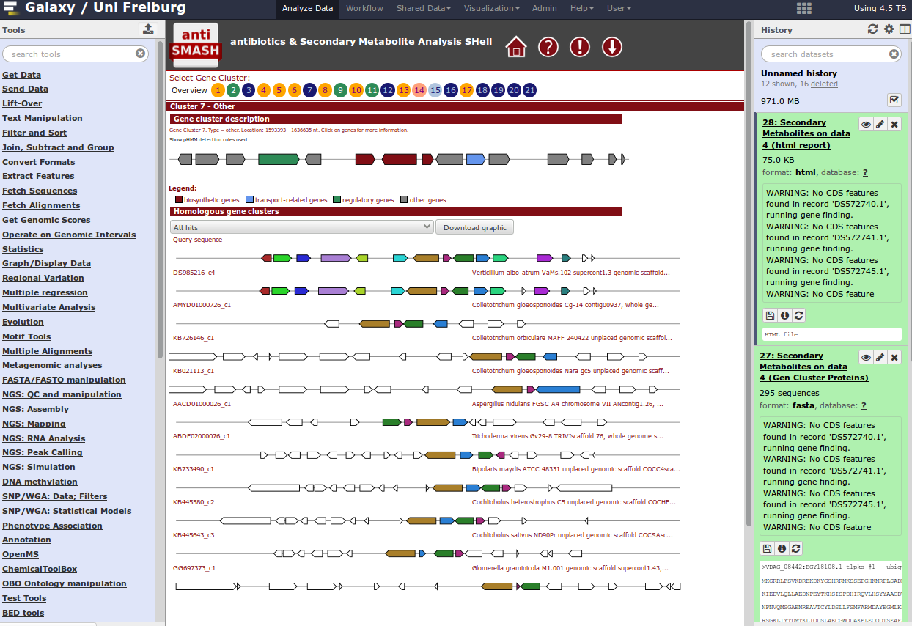

Genome Annotation
Under Development!
This tutorial is not in its final state. The content may change a lot in the next months. Because of this status, it is also not listed in the topic pages.
| Author(s) |
|
OverviewQuestions:
Objectives:
Requirements:
Time estimation: 2 hoursLevel: Introductory IntroductorySupporting Materials:Published: Jun 29, 2015Last modification: Oct 15, 2024License: Tutorial Content is licensed under Creative Commons Attribution 4.0 International License. The GTN Framework is licensed under MITpurl PURL: https://gxy.io/GTN:T00175rating Rating: 3.5 (0 recent ratings, 13 all time)version Revision: 17
Genome annotation is the process of attaching biological information to sequences. It consists of three main steps:
- identifying portions of the genome that do not code for proteins
- identifying elements on the genome, a process called gene prediction, and
- attaching biological information to these elements.
AgendaIn this tutorial, we will deal with:
Introduction into File Formats
FASTA
DNA and protein sequences are written in FASTA format where you have in the first line a “>” followed by the description. In the second line the sequence starts.

GFF3
The general feature format (gene-finding format, generic feature format, GFF) is a file format used for describing genes and other features of DNA, RNA and protein sequences.

GENBANK
The genbank sequence format is a rich format for storing sequences and associated annotations.

Structural Annotation
For the genome annotation we use a piece of the Aspergillus fumigatus genome sequence as input file.
Sequence Features
First we want to get some general information about our sequence.
Hands-on: Sequence composition
- Count the number of bases in your sequence (compute sequence length)
- Check for sequence composition and GC content (geecee).
- Plot the sequence composition as bar chart.

Gene Prediction
At first you need to identify those structures of the genome which code for proteins. This step of annotation is called “structural annotation”. It contains the identification and location of open reading frames (ORFs), identification of gene structures and coding regions, and the location of regulatory motifs. Galaxy contains several tools for the structural annotation. Tools for gene prediction are Augustus (for eukaryotes and prokaryotes) and glimmer3 (only for prokaryotes).
Hands-on: Gene predictionWe use Augustus for gene prediction.
- Use the genome sequence (FASTA file) as input.
- Choose the right model organism, gff format output.
- Select all possible output options.
Augustus will provide three output files: gff3, coding sequences (CDS) and protein sequences.
QuestionHow many genes are predicted?
Check the output: augustus_output

Hands-on: tRNA and tmRNA PredictionUse Aragorn for tRNA and tmRNA prediction.
- As input file use the Aspergillus genome sequence. You can choose the genetic code (e.g. bacteria).
Select the topology of your genome (circular or linear).
QuestionAre there tRNAs or tmRNAs in the sequence?
read more about Aragorn in this publication.
Functional Annotation
Similarity Searches (BLAST)
Functional gene annotation means the description of the biochemical and biological function of proteins. Possible analyses to annotate genes can be for example:
- similarity searches
- gene cluster prediction for secondary metabolites
- identification of transmembrane domains in protein sequences
- finding gene ontology terms
- pathway information
For similarity searches we use NCBI BLAST+ blastp to find similar proteins in a protein database.
Hands-on: Similarity search
- tool As input file, select the protein sequences from Augustus.
- Choose the protein BLAST database SwissProt and the output format xml.

Parsing the xml output (Parse blast XML output) results in changing the format style into tabular.
QuestionWhat information do you see in the BLAST output?
From BLAST search results we want to get only the best hit for each protein.
tool Therefore apply the tool BLAST top hit descriptions with number of descriptions =1 on the xml output file.
QuestionFor how many proteins we do not get a BLAST hit?
tool Choose the tool Select lines that match an expression and enter the following information: Select lines from [select the BLAST top hit descriptions result file]; that [not matching]; the pattern [gi].
Comment: Results fileThe result file will contain all proteins which do not have an entry in the second column and therefore have no similar protein in the SwissProt database.
Comment: Obtaining unannotated proteins for analysisFor functional description of those proteins we want to search for motifs or domains which may classify them more. To get a protein sequence FASTA file with only the not annotated proteins, use the tool Filter sequences by ID from a tabular file and select for Sequence file to filter on the identifiers [Augustus protein sequences] and for Tabular file containing sequence identifiers the protein file with not annotated sequences. The output file is a FASTA file with only those sequences without description.

{kind=link}
This file will be the input for more detailed analysis:
-
Interproscan is a functional prediction tool. Select all applications and run it on your protein file.
-
WolfPSort predicts eukaryote protein subcellular localization. Filter the result file for the best ranked localization hit. Use Filter data on any column using simple expressions with c4==1. The parameter c4==1 means: filter and keep all results where in column 4 is a “1”.
-
TMHMM finds transmembrane domains in protein sequences. The number of amino acids in transmembrane helices should be >18. This information can be found in column 3. Filter the result file c3>17.99.
-
BLAST2GO maps BLAST results to GO annotation terms.
BLAST Programs


If you have an organism which is not available in a BLAST database, you can use its genome sequence in FASTA file for BLAST searches “sequence file against sequence file”. If you need to search in these sequences on a regularly basis, you can create a own BLAST database from the sequences of the organism. The advantage of having a own database for your organism is the duration of the BLAST search which speeds up a lot.
NCBI BLAST+ makeblastdb creates a BLAST database from your own FASTA sequence file. Molecule type of input is protein or nucleotide.
Cock et al. (2015): NCBI BLAST+ integrated into Galaxy
Cock et al. (2013): Galaxy tools and workflows for sequence analysis with applications in molecular plant pathology
More Similarity Search Tools in Galaxy
- VSEARCH: For processing metagenomic sequences, including searching, clustering, chimera detection, dereplication, sorting, masking and shuffling. VSEARCH stands for vectorized search, as the tool takes advantage of parallelism in the form of SIMD vectorization as well as multiple threads to perform accurate alignments at high speed. VSEARCH uses an optimal global aligner (full dynamic programming Needleman-Wunsch), in contrast to USEARCH which by default uses a heuristic seed and extend aligner. This results in more accurate alignments and overall improved sensitivity (recall) with VSEARCH, especially for alignments with gaps.
Documentation for vsearch available via their GitHub repository.
- Diamond: Diamond is a high-throughput program for aligning a file of short reads against a protein reference database such as NR, at 20,000 times the speed of Blastx, with high sensitivity.
Buchfink et al. (2015): Fast and sensitive protein alignment using Diamond.
- Kraken: Kraken BLAST is a highly scalable, extremely fast, commercial, parallelized implementation of the NCBI BLAST application.
Identification of Gene Clusters
For identification of gene clusters, antiSMASH is used. The tool uses genbank file as input files and predicts gene clusters. Output files are a html visualization and the gene cluster proteins.
Hands-on: antiSMASH analysistool Import this dataset into your Galaxy history and run antiSMASH to detect gene clusters. The genbank file contains a part of the Streptomyces coelicolor genome sequence.
QuestionWhich gene clusters are identified?
When you have a whole genome antiSMASH analysis, your result may look like this:

At the end, you can extract a reproducible workflow out of your history. The workflow should look like this:

You've Finished the Tutorial
Frequently Asked Questions
Have questions about this tutorial? Check out the tutorial FAQ page or the FAQ page for the Genome Annotation topic to see if your question is listed there. If not, please ask your question on the GTN Gitter Channel or the Galaxy Help ForumFeedback
Did you use this material as an instructor? Feel free to give us feedback on how it went.
Did you use this material as a learner or student? Click the form below to leave feedback.
Citing this Tutorial
- Anika Erxleben, Björn Grüning, Genome Annotation (Galaxy Training Materials). https://training.galaxyproject.org/training-material/topics/genome-annotation/tutorials/genome-annotation/tutorial.html Online; accessed TODAY
- Hiltemann, Saskia, Rasche, Helena et al., 2023 Galaxy Training: A Powerful Framework for Teaching! PLOS Computational Biology 10.1371/journal.pcbi.1010752
- Batut et al., 2018 Community-Driven Data Analysis Training for Biology Cell Systems 10.1016/j.cels.2018.05.012
@misc{genome-annotation-genome-annotation, author = "Anika Erxleben and Björn Grüning", title = "Genome Annotation (Galaxy Training Materials)", year = "", month = "", day = "" url = "\url{https://training.galaxyproject.org/training-material/topics/genome-annotation/tutorials/genome-annotation/tutorial.html}", note = "[Online; accessed TODAY]" } @article{Hiltemann_2023, doi = {10.1371/journal.pcbi.1010752}, url = {https://doi.org/10.1371%2Fjournal.pcbi.1010752}, year = 2023, month = {jan}, publisher = {Public Library of Science ({PLoS})}, volume = {19}, number = {1}, pages = {e1010752}, author = {Saskia Hiltemann and Helena Rasche and Simon Gladman and Hans-Rudolf Hotz and Delphine Larivi{\`{e}}re and Daniel Blankenberg and Pratik D. Jagtap and Thomas Wollmann and Anthony Bretaudeau and Nadia Gou{\'{e}} and Timothy J. Griffin and Coline Royaux and Yvan Le Bras and Subina Mehta and Anna Syme and Frederik Coppens and Bert Droesbeke and Nicola Soranzo and Wendi Bacon and Fotis Psomopoulos and Crist{\'{o}}bal Gallardo-Alba and John Davis and Melanie Christine Föll and Matthias Fahrner and Maria A. Doyle and Beatriz Serrano-Solano and Anne Claire Fouilloux and Peter van Heusden and Wolfgang Maier and Dave Clements and Florian Heyl and Björn Grüning and B{\'{e}}r{\'{e}}nice Batut and}, editor = {Francis Ouellette}, title = {Galaxy Training: A powerful framework for teaching!}, journal = {PLoS Comput Biol} Computational Biology} }
Funding
These individuals or organisations provided funding support for the development of this resource


You can use Ephemeris's
shed-tools installcommand to install the tools used in this tutorial.shed-tools install [-g GALAXY] [-a API_KEY] -t <(curl https://training.galaxyproject.org/training-material/api/topics/genome-annotation/tutorials/genome-annotation/tutorial.json | jq .admin_install_yaml -r)Alternatively you can copy and paste the following YAML
--- install_tool_dependencies: true install_repository_dependencies: true install_resolver_dependencies: true tools: []